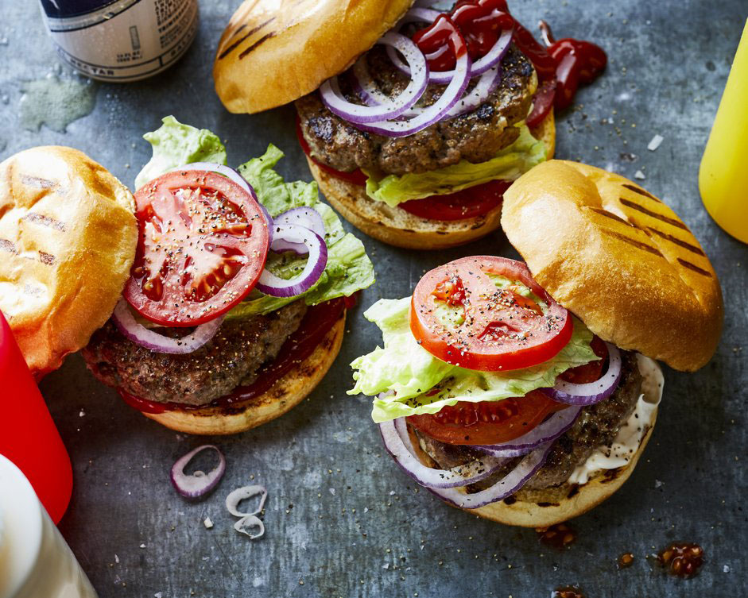

Hamburger

The Classic Burger
This is the classic hamburger recipe which will always amaze your hungry guests
In this recipe you will need these ingredients:
Ingredients
- 300g ground lean (7% fat) beef
- 1 large egg
- 1/2 cup minced onion
Steps
- In a bowl, mix ground beef, egg, onion, bread crumbs, Worcestershire,
garlic, 1/2 teaspoon salt, and 1/4 teaspoon pepper until well blended.
Divide mixture into four equal portions and shape each into a patty about
4 inches wide.
-
Lay burgers on an oiled barbecue grill over a solid bed of hot coals or
high heat on a gas grill (you can hold your hand at grill level only 2 to 3
seconds); close lid on gas grill. Cook burgers, turning once, until browned
on both sides and no longer pink inside (cut to test), 7 to 8 minutes total.
Remove from grill.